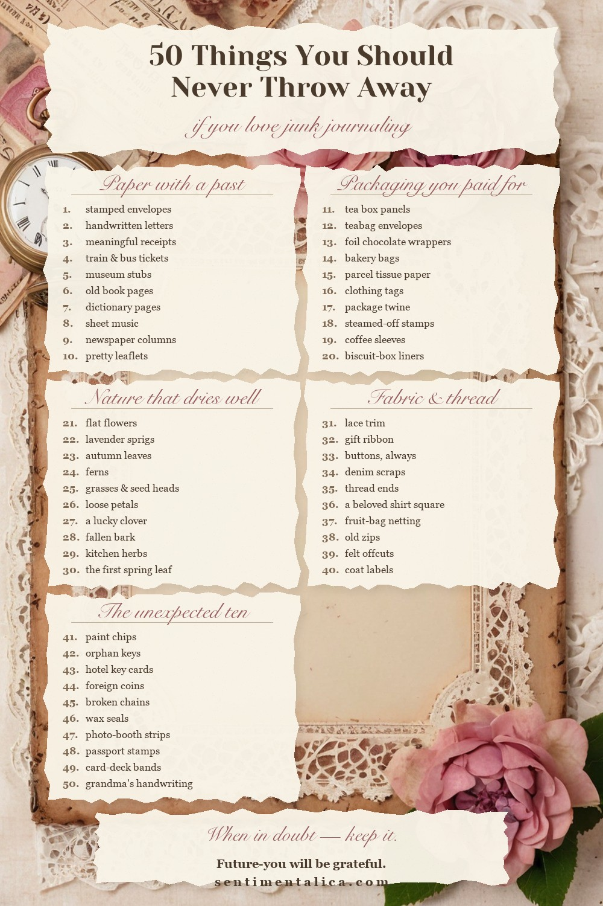

Every junk journaler has the same origin story: one day you are about to throw something away, and a small voice says — wait. This is the list of fifty things that voice is talking about. Pin it above your bin.

Paper that already has a life
- Envelopes with beautiful stamps
- Handwritten letters, even boring ones
- Receipts from meaningful days
- Train and bus tickets
- Museum and cinema stubs
- Old book pages from damaged books
- Dictionary and atlas pages
- Sheet music
- Yellowed newspaper columns
- Instruction leaflets in lovely typefaces
None of these are rare — that is the point. They are yours. A tram ticket glued beside a painted page turns decoration into memory, and no one else on earth can make that page.
Packaging you paid for anyway
- Tea box panels
- Teabag envelopes (steam them open)
- Chocolate wrappers with gold foil
- Paper bags from bakeries
- Tissue paper from parcels
- Clothing tags
- String and twine from packages
- Stamps steamed off parcels
- Coffee sleeves
- The corrugated liner inside biscuit boxes
Nature that dries beautifully
- Flat flowers (pansies are champions)
- Lavender sprigs
- Small leaves in autumn colour
- Ferns
- Grasses and seed heads
- Flower petals for scatter
- A four-leaf clover if you are lucky
- Thin bark that has already fallen
- Pressed herbs from cooking
- The first tiny leaf of spring
Fabric, thread and soft things
- Lace trim from worn-out clothes
- Ribbon from gift wrapping
- Buttons, always buttons
- Denim scraps
- Embroidery thread ends
- A square of a beloved old shirt
- Netting from fruit bags
- Zips from broken pouches
- Felt offcuts
- The satin label from a coat
The unexpected ten
- Paint chips from the hardware store
- Old keys that open nothing
- Hotel key cards and luggage tags
- Pressed pennies and foreign coins (trace or rub them)
- Broken jewellery chains
- Wax seals from fancy mail
- Photo-booth strips
- Expired stamps from your own passport story
- The paper band from a new deck of cards
- Anything with your grandmother's handwriting on it. Especially that
And when the shoebox is full
Found things give a journal its soul — and if one day your shoebox is rich but your base papers are thin, printable pages are the quiet backbone that holds it all. That part, when you need it, lives here:
Print a few pages tonight, open the shoebox, and let the first spread argue with itself a little. That is how the good ones start.
More lists, palettes and paper worlds live in the journal — bring your tea.